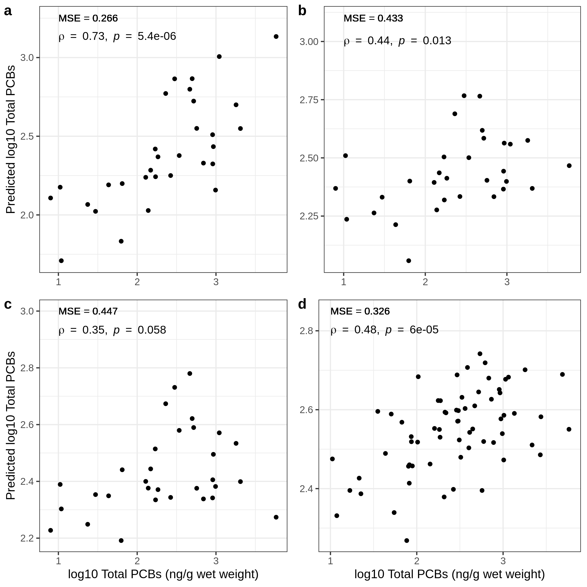
My Research
The biological effects of complex contaminant mixtures on tree swallow (Tachycineta bicolor) nestlings from the Great Lakes; Using omics techniques to evaluate and predict contaminant mixtures
Chi Yen Tseng1, Christine M. Custer2, Thomas W. Custer2, Paul M. Dummer2, Natalie Karouna‐Renier3 and Cole W. Matson1
- Department of Environmental Science, The Institute of Ecological, Earth, and Environmental Sciences (TIE3S), and the Center for Reservoir and Aquatic Systems Research (CRASR), Baylor University, Waco, Texas 76798, United States
- Upper Midwest Environmental Sciences Center, U.S. Geological Survey, La Crosse, Wisconsin 54603, United States
- U.S. Geological Survey, Eastern Ecological Science Center (EESC) at Patuxent, Beltsville, Maryland 20705, United States
Any use of trade, product, or firm names is for descriptive purposes only and does not imply endorsement by the U.S. Government.
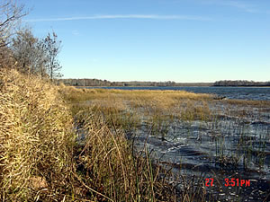Natural
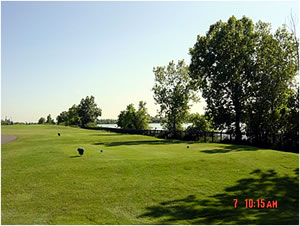Urban
Industrial
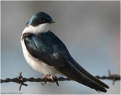 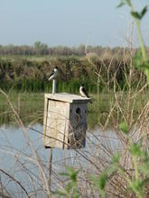 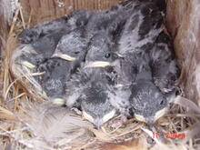
source
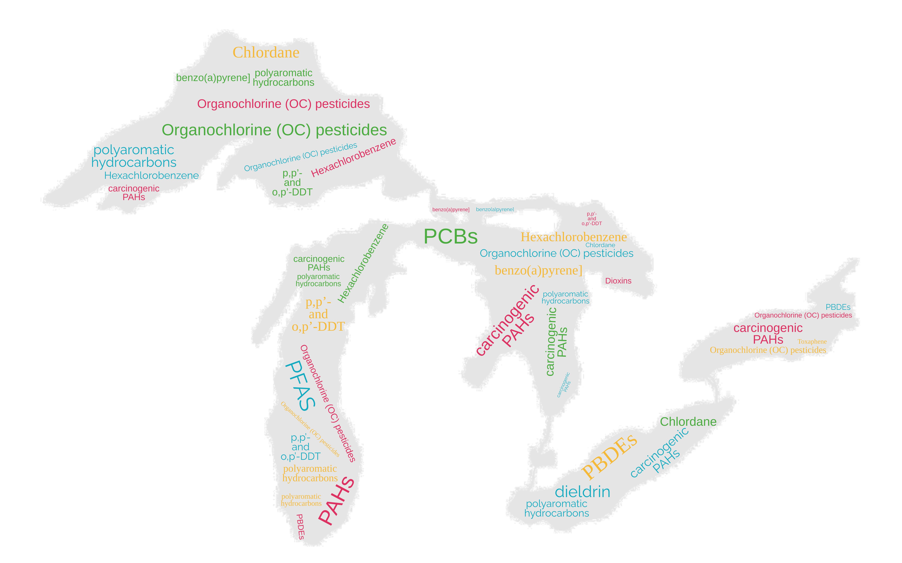
Tree Swallow (Tachycineta bicolor)
The Great Lake Restoration Initiative aims to manage and prevent irreversible damage caused by human activities in the Great Lakes region. Tree Swallows are used as a model organism to study the effects of contaminants on bird populations in the area. We collected Tree Swallow nestlings to analyze the effects of polychlorinated biphenyls (PCBs), polycyclic aromatic hydrocarbons (PAHs), polybrominated diphenyl ethers (PBDEs), perfluorinated substances (PFAS), and chlorinated pesticides on their biology, and developed a system to integrate transcriptomic responses with contaminant concentrations.
Part I: Exploring the Connections between Land-Use, Contamination Profiles, and Omics Signals on a Regional Scale: Maumee River, OH
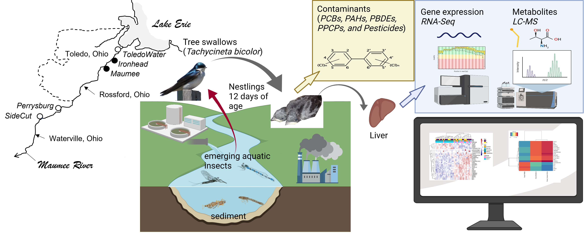
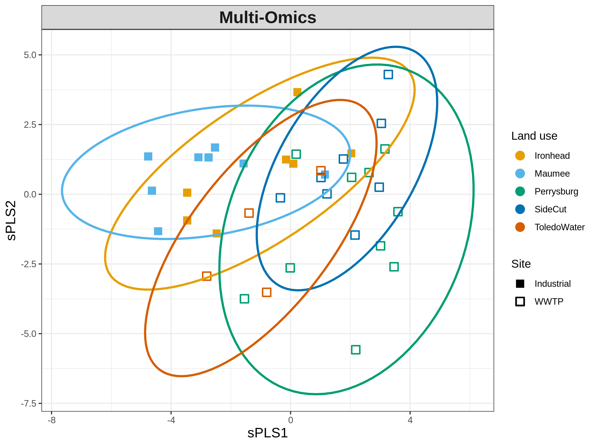 DOI: 10.1016/j.scitotenv.2022.159130
FULL TEXT
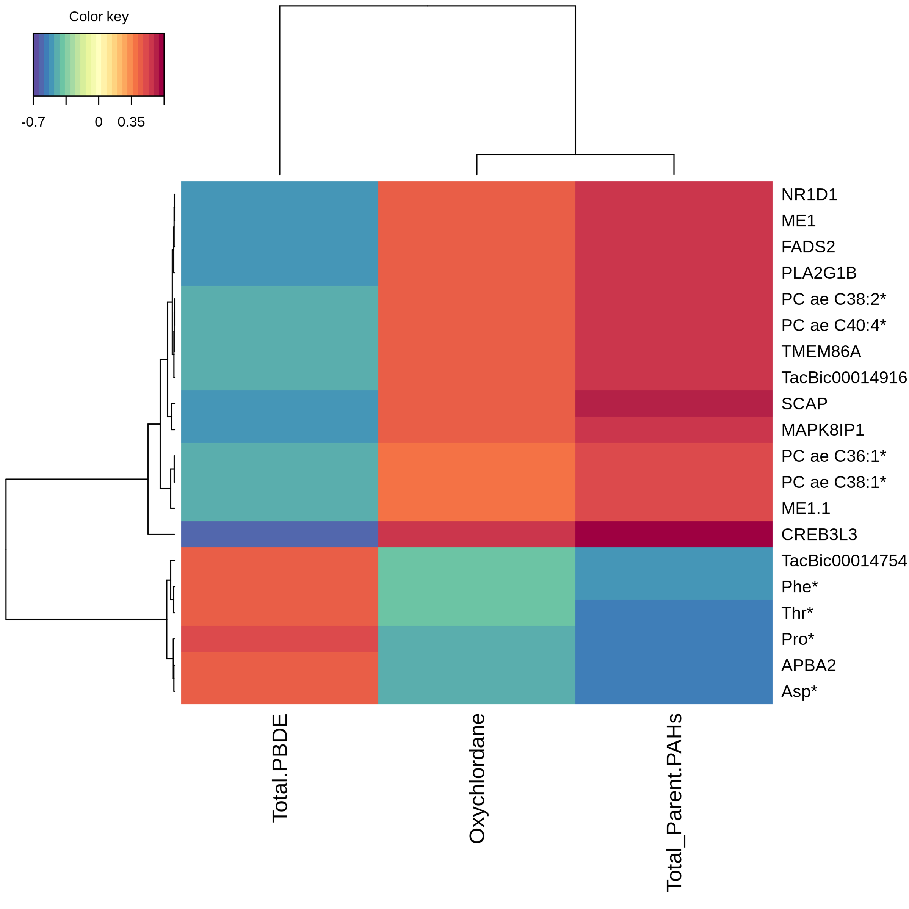
- Multi-omics approach used to evaluate chemical risks in the Maumee AOC
- Tree swallow nestlings showed elevated levels of contaminants
- Differential gene expression related to cell growth and lipogenesis in polluted sites
- PAHs, oxychlordane, and PBDEs identified as likely causes of biological responses
Part II: Contaminant Mixtures and Gene Expression in Tree Swallows of the Great Lakes
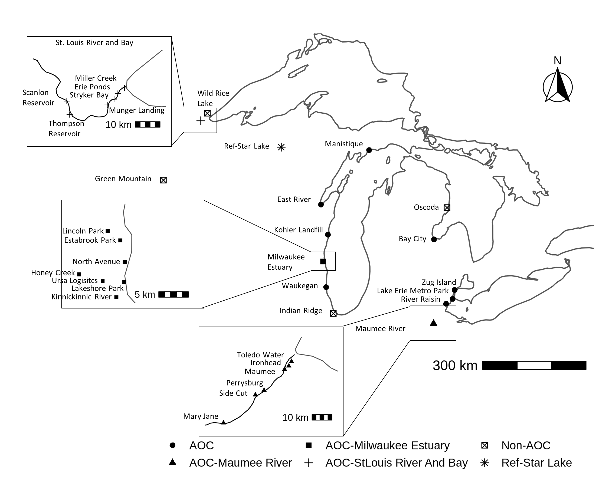Nestlings of Tree Swallow were gathered from different locations including Areas of Concern (AOCs), non-AOCs, and two sites located outside the Great Lakes basin.
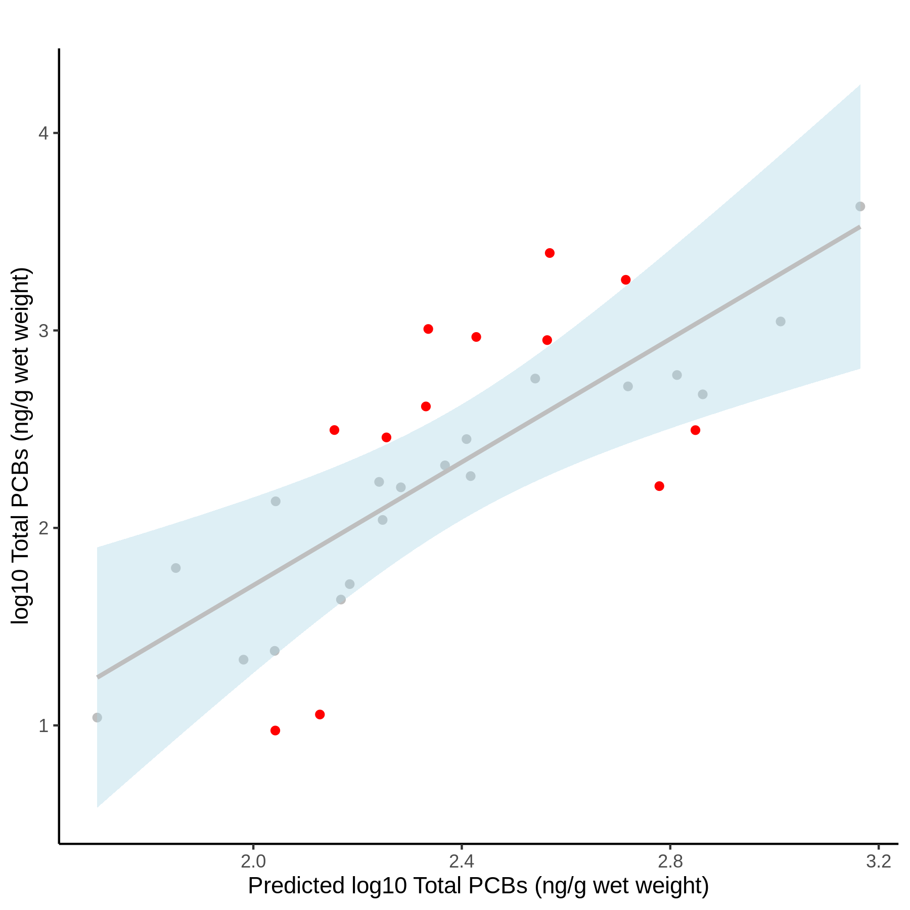

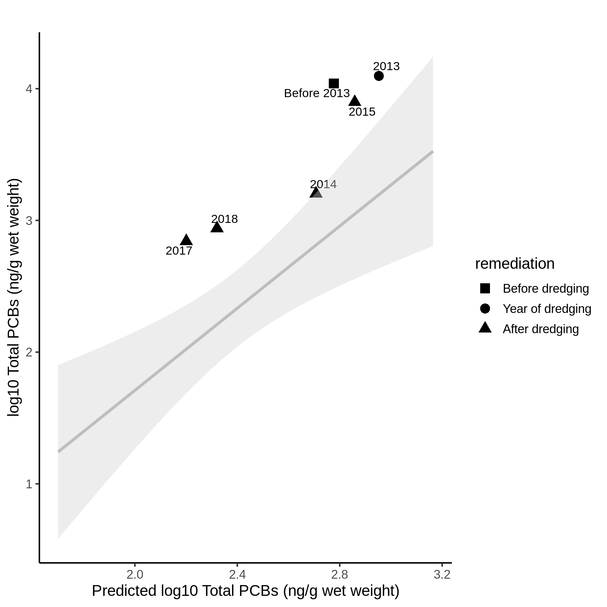
Site initial assessment
Dredging
Remedy effectiveness estimation at Waukegan harbor
- Developed system to integrate transcriptomic responses with contaminant concentrations for Tree Swallow nestlings in the Great Lakes.
- Models accurately predict PCB or PAH tissue concentrations to differentiate high vs low sites.
- Transcriptomic responses can predict site contaminant levels and prioritize monitoring for disturbed biological functions.
- System can be used for effects-based monitoring, remedy effectiveness estimation, and baseline molecular responses to support management decisions.
Part III: “Comparison of Predictive Models for Monitoring Contamination in Tree Swallow Nestlings Using Non-targeted Global Gene Expression, Targeted Gene Panels, and Bioindicators in the Great Lakes Region”
- Non-targeted analysis using global gene expressions; b. Targeted Quail 384 gene panels; c. Targeted, combined bird gene array; d. EROD + DNA damage + TBARs bioindicators
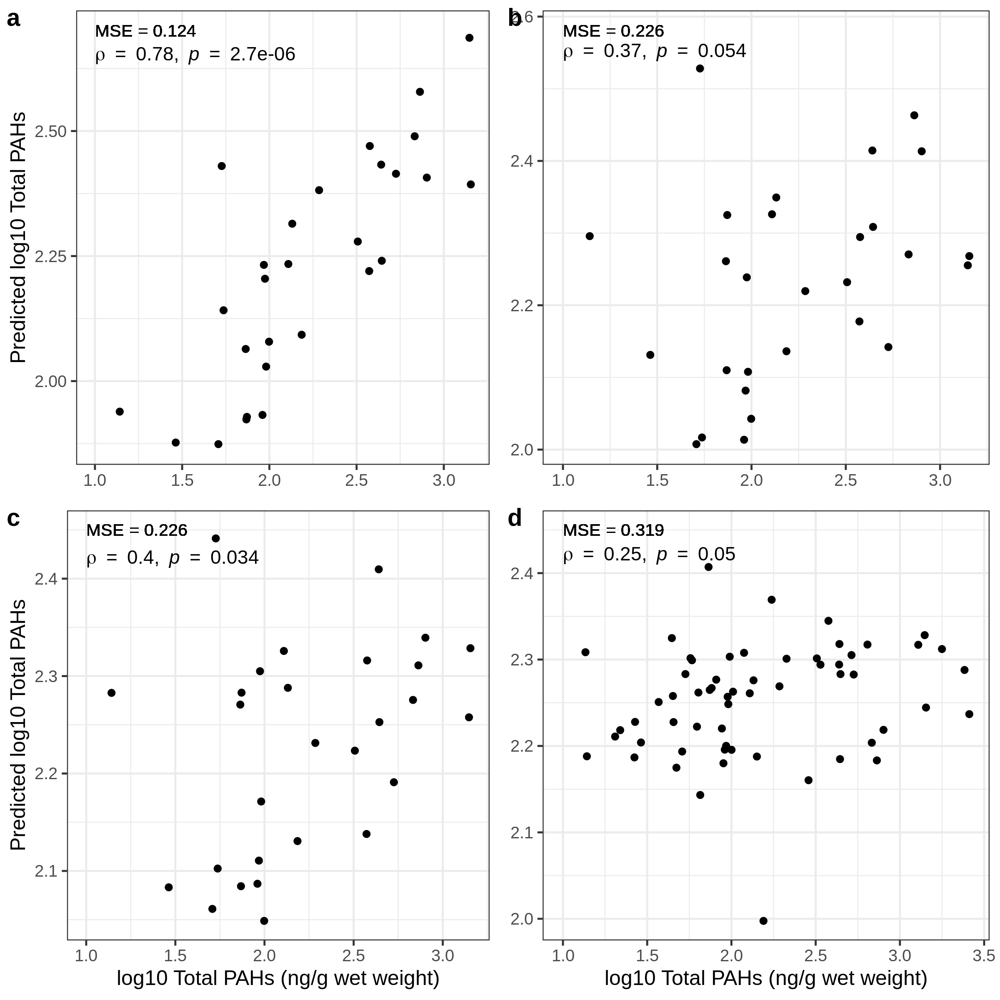
- Non-targeted analysis using global gene expressions; b. Targeted Quail 384 gene panels; c. Targeted, combined bird gene array; d. EROD + TBARs + PBSH
- Study focused on predicting residues of polychlorinated biphenyls (PCBs) or polycyclic aromatic hydrocarbons (PAHs) in tree swallow nestlings from contaminated and clean sites in the Great Lakes region.
- Three different predictive models were compared:
- Non-targeted analysis with global gene expression
- Targeted analysis with avian gene panels and Bioindicators
- Non-targeted analysis with global gene expression
- Models built with global gene expression had the best performance in predicting PCBs or PAHs concentrations.
- Models built with avian gene arrays and bioindicators also had significant performance
- Three different predictive models were compared:
- The study concluded that non-targeted analysis with global gene expression provides the best prediction performance. Targeted analysis with gene arrays or bioindicators can still provide significant performance, supporting their use in environmental assessments when large-scale, in-situ samples are not available. This comparison supported using non-targeted global gene expression for monitoring and prioritizing contaminated sites in the Great Lakes region.